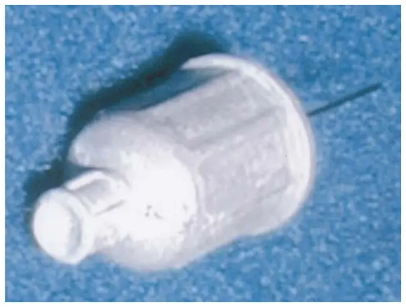
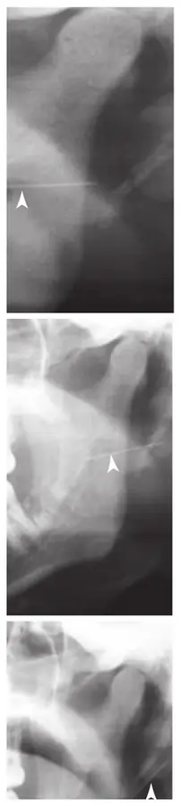

نسخه استخراجشده؛ ترجمه یا تأیید علمی انجام نشده است. وضعیت: captured
پسری ۹ ساله برای کشیدن مولر شیری پایین آمده. همکارت بلاک عصب آلوئولار تحتانی (IANB) را با سوزن کوتاه گیج ۳۰ زده و سوزن را تا هاب فرو برده که کودک ناگهان سرش را برمیگرداند. سرنگ بیرون میآید ولی سوزن روی آن نیست. چه اتفاقی افتاده است؟

از وقتی سوزنهای فولادی یکبارمصرف آمدهاند، شکستن سوزن بسیار نادر شده است؛ یک برآورد آن را حدود یک در ۱۴ میلیون IANB میداند. ولی هنوز رخ میدهد و موارد گزارششده الگوی مشترک روشنی دارند:
سه عامل دیگر هم تکرار میشود: خم کردن سوزن پیش از تزریق، حرکت ناگهانی بیمار (بیشتر کودک) وقتی سوزن در بافت است، و برخورد پرفشار با استخوان. در سوزنهای بیرونآمده نقص ساخت پیدا نشده است.
چرا ورود تا هاب مهم است؟ اگر بخشی از سوزن بیرون بافت بماند، سر تکه را میبینی و بیرون میکشی. ولی وقتی سوزن تا هاب فرو رفته و بافت زیر فشار سرنگ فرو نشسته، بافت پس از خروج سرنگ برمیگردد و تکه را کاملاً میپوشاند.
نکتهی طلایی: تکهی سوزن در بافت بیخطر نیست؛ تا وقتی آنجاست ممکن است به عصب و رگهای اطراف آسیب بزند و حتی جابهجا شود.
